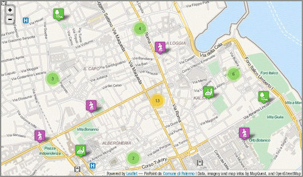

Introduzione
NDR: questo articolo viene pubblicato in contemporanea anche su MobilitaPalermo, un importante blog cittadino non “tecnico”. Per questa ragione nel testo sono stati inseriti dei riferimenti che potranno sembrare scontati per il lettore “tipico” di TANTO.
Il 23 febbraio di quest’anno, in occasione del primo Open Data Day italiano, ho assistito alla presentazione della strategia Open Data del Comune di Palermo.
Sono andato con entusiasmo all’incontro, ma sono tornato a casa pieno di dubbi, perché in quell’occasione ho avuto la sensazione che di strategia ce ne fosse poca, e che il Comune stesse realizzando l’apertura dei dati detenuti con poca consapevolezza.
Non è stato presentato un documento sulle linee guida, né tantomeno è stata annunciata una sua imminente realizzazione. Non è stata data alcuna comunicazione sugli investimenti ed il budget messo a disposizione per il mantenimento e l’ulteriore sviluppo del piano inerente la liberalizzazione dei dati. Sono state accennate, peraltro in modo molto generale, un paio di evoluzioni possibili del progetto, ma senza associarle ad una scadenza temporale, e non definendone le modalità di realizzazione.
Si è ancora in tempo per fare, ad esempio, queste due attività di divulgazione:
- esplicitare ai cittadini l’intero iter che si vuole seguire, definendo con chiarezza: cosa ci si aspetta di ottenere; quali impegni concreti prende l’amministrazione; a quali vincoli le decisioni sono sottoposte (normativi, finanziari, istituzionali, ecc.);
- fornire tutte le informazioni necessarie affinché la partecipazione dei cittadini si possa basare su una conoscenza approfondita dei temi oggetto di discussione e non su semplici sensazioni;
Sono due punti “rubati” da un bell’articolo di Claudio Forghieri. L’articolo parla d’altro, di crowdsourcing applicata alla Pubblica Amministrazione, ma contiene diversi spunti utili per il tema degli OpenData, sia per i decisori che per i cittadini.
Discutere di dati aperti significa parlare di trasparenza dell’attività della P.A., ma anche e soprattutto, in questo momento di crisi, di opportunità per i cittadini, per gli sviluppatori, per le aziende.
Come detto, dalle istituzioni ci si aspetta, quanto meno, che venga tracciata una road map da seguire (si confronti, ad esempio, i principi chiave sugli open data del Comune di Milano con la sezione opendata del Comune di Palermo), ma anche che le stesse istituzioni interagiscano con la società civile (cittadini, aziende, ecc.).
Le due aspettative sono state finora entrambe disattese.
A distanza di due mesi da quella presentazione, non riscontro evidenze che migliorino questo quadro e navigando sul sito saltano subito agli occhi questi elementi:
- dal giorno del lancio non sono stati pubblicati nuovi dataset. Se ne ha evidenza nel box “Ultimi dataset” presente sulla pagina web del Comune dedicata agli Open Data;
- non è stato inserito un motore di ricerca dedicato, né tantomeno i dati sono pubblicati in modo da “essere facilmente identificabili in rete, grazie a cataloghi e archivi facilmente indicizzabili dai motori di ricerca” (vademecum OpenData);
- alcuni dati sono pubblicati in formato proprietario (ad esempio il formato .rar);
- i dataset non sono strutturati in modo tale da essere presentati in maniera sufficientemente granulare, così che possano essere sempre utilizzati dagli utenti per integrarli e aggregarli con altri dati e contenuti in formato digitale (Project Work Open Government Data)
- i dataset hanno un corredo scarso di metadati descrittivi;
- soltanto due dataset sono stati fatti confluire verso dati.gov.it, il Portale nazionale dei dati aperti.
Ho scritto quattro email al Comune di Palermo e non ho mai avuto alcuna risposta. Nel giorno della presentazione era stato chiesto ai presenti di vivere in modo partecipato l’iniziativa, e che i responsabili del Comune sarebbero stati in ascolto e lieti di ricevere contributi dai cittadini. Sulla sezione del sito dedicata si legge: “Se vuoi proporre la pubblicazione di ulteriori dati interessanti e/o per eventuali segnalazioni contattaci“.
L’esperienza professionale e umana mi ha avvicinato molto al mondo degli Open Data. Per tale ragione scriverò a seguire anche alcune cose un po’ più “tecniche” e specifiche, perché l’esperienza è anche un grande supporto alla comunicazione. Partirò proprio dalle email che ho inviato.
Nella prima scrivevo “[...] solo per consigliarvi di non usare il formato .rar per i file compressi, in quanto è un formato proprietario [...].” Come detto, oltre a non ricevere alcuna risposta, i file .rar continuano ad essere presenti nel sito (ad esempio qui).
Nella seconda, in riferimento al dataset “PERIMETRAZIONE CIRCOSCRIZIONI COMUNALI“, scrivevo: “[...] è presente una grave lacuna: manca il file con la definizione del sistema di coordinate.[...]“. Il dataset è ancora sprovvisto di questa informazione fondamentale.
Nella terza segnalavo che il dataset “ELEZIONI AMMINISTRATIVE 2012 - AFFLUENZA ALLE URNE” non fosse scaricabile. Da qualche giorno è possibile farne il download.
Nell’ultima, un po’ più complessa, facevo notare come il dataset “TURISMO - ELENCO DEI SITI TURISTICI VISITABILI” contenesse alcuni errori. Questi sembrano stati corretti, ma l’ho scoperto per caso oggi.
Suggerisco al comune di creare un sistema di feedback, al limite anche automatico, altrimenti qualsiasi sistema di segnalazione non ha quasi alcuna utilità funzionale e sostanziale.
Quest’ultimo dataset è quello più scaricato, quello che sembra più interessante per gli utenti del sito. Incuriosito dal numero di download l’ho scaricato ed ho provato a farci qualcosa, con l’obiettivo di testare concretamente l’efficacia di questa azione e di restituire anche qualcosa indietro.

Il dataset dei siti turistici visitabili della città di Palermo
Palermo è una città con un centro storico molto grande (in alcune classifiche è riportato come il più grande d’Europa). E’ quindi di elevato interesse turistico e ricca di siti visitabili. Pubblicare in Open Data questo dataset è un’ottima scelta, perché si presta potenzialmente ad uno degli scopi principali di questo tipo di azione: il riuso da parte di cittadini, professionisti e aziende. Una persona, infatti, potrebbe scaricare questi dati e farne ad esempio una app per smartphone, utile a chiunque voglia scoprire questa bella città. Realizzarla in più lingue, metterla in vendita in uno store dedicato, guadagnare il giusto e contribuire a rendere Palermo più fruibile.
Il dataset relativo è così descritto sul sito:
La tabella contiene i dati relativi ai siti turistici visitabili in città. Sono distinti il tipo sito, la denomianzione del sito, la descrizione, l’indirizzo, info, orario di accesso al sito, note relative all’orario di accesso al sito, l’eventuale necessità di biglietto di ingresso con i relativi costi ed esenzioni, contatto mail, sito web dedicato, note per eventuali visite guidate ove possibile, informazioni sull’accessibilità.
La descrizione, a parte un piccolo errore di battitura (“denomianzione” per “denominazione”), è chiara e abbastanza autoconsistente. Del dato originale però non sappiamo altro, salvo il suo formato (.csv) e il nome del responsabile (Dott. Eliana Calandra).
Sono presenti in realtà altre informazioni – come ad esempio la “Data di creazione” – ma non riguardano il dato originale, e lo descrivono soltanto in relazione alla sua pubblicazione nella sezione Open Data del sito del Comune.
L’assenza di informazioni fondamentali sul dataset e propedeutiche affinché il dato possa essere realmente usato e abbia un valore concreto, ne sminuisce fortemente il valore e la sua usabilità, vanificando, di fatto, lo scopo per il quale è stato pubblicato.
Ad esempio, uno di questi è l’indicazione della data di aggiornamento: quando è stato redatto questo archivio?
Un dataset turistico deve essere recente ed aggiornato per avere valore, infatti cambiano con una certa frequenza elementi informativi come: costi di eventuali biglietti ingresso, orari di apertura, numeri di telefono, ecc..
Altra informazione omessa nella pubblicazione del dataset è quella relativa alla scelta progettuale che c’è alle spalle dell’archivio. Contiene 100 siti. Viene da domandarsi: sono tutti quelli visitabili in questa città? Se non lo sono, che filtro è stato applicato? Sono 100 perché si è filtrato soltanto in base a “chiese e oratori” (59), “musei e gallerie d’arte” (26) e “ville e giardini” (15)? Perché ci sono siti di Bagheria e non di altri comuni?
Il dataset analizzato si presta alla rappresentazione cartografica, ma non contiene le coordinate dei vari siti contenuti. Tuttavia è presente l’indirizzo ed è su questo che ho eseguito un’operazione di geocoding.
Prima di farlo però, l’ho analizzato un po’ più nei dettagli. A seguire alcuni degli elementi riscontrati:
- l’anno di costruzione dei siti è inserito nel campo “Nome del sito”. In questo modo è un’informazione poco utilizzabile. Sarebbe preferibile inserirla in un campo dedicato (l’ho fatto). Che questo numero presente nel campo sia l’anno di costruzione è una mia deduzione, ma non posso esserne certo.
- ci sono due righe per la “Chiesa di S. Maria in Valverde (1633)”. L’unica differenza sembra l’indirizzo, ma tutti gli altri dati sembrano coincidenti.
- ci sono 8 strutture in cui non è inserito il numero di telefono. Per un dataset di questo tipo è una grave lacuna; basti pensare che mancano quelli dell’Orto Botanico e della Cappella Palatina.
- il campo “info” contiene essenzialmente i numeri di telefono, ma mescolati alle volte con elementi altrettanto utili come “Sito è visitabile solo in occasione di mostre e/o eventi” o “Chiusa per restauro”. Penso che sarebbe preferibile creare un campo “telefono”, distinto da un generico “info”.
- il campo “indirizzo email”, importantissimo a fini turistici, non è mai valorizzato. In realtà lo è una sola volta, nel caso della “Chiesa di S. Cristina La Vetere (1174)”, ma è stato scambiato con il valore contenuto nel campo “sito web” (l’ho modificato).
- gli URL dei siti web sono inseriti di solito con questa struttura ” www.nomesito.it“. Alcuni record però sono difformi (“http://www.nomesito.it” o ad esempio “web: www.nomesito.it”). Li ho uniformati alla struttura www.nomesito.it
- nel campo “descrizione del sito” è possibile leggere sia “chiesa” che “Chiesa”, “Cappella” e “cappella”; ho uniformato i nomi di categoria in minuscolo.
- solo la “Cattedrale” ha informazioni sull’accessibilità. Mi sembra un’informazione propedeutica per qualsiasi dataset di informazioni su siti turistici.
- sono presenti numerosi spazi doppi, ed alcuni caratteri di tabulazione, che non hanno ragione di essere presenti, e che disturbano la gran parte delle eleborazioni automatiche via software.
- il nome via corretto per “Corso Vittorio Emanuele” dovrebbe essere “Via Vittorio Emanuele”.
Fatta questa rapida analisi del dato, sono passato a fare il geocoding sfruttando le API dedicate di Google. Queste consentono con una chiamata in HTTP, partendo da un indirizzo postale, di avere restituito (tra le altre cose) latitudine e longitudine dell’indirizzo. Per conoscere, ad esempio, quelle di “Via Terrasanta 82, Palermo” lancerò questo URL:
http://maps.googleapis.com/maps/api/geocode/xml?
address=Via%20Terrasanta%2082,%20Palermo&sensor=false
L’output in questo caso è in XML e tra le informazioni che mi vengono restituite ci sono proprio quelle che cerco, latitudine e longitudine:
<location> <lat>38.1303072</lat> <lng>13.3445130</lng> </location>
Ma si tratta soltanto di uno strumento e come tale ha anche lui i suoi problemi. Due esempi tra tanti:
- non sono presenti nel database di Google tutti i numeri civici, come ad esempio “Piazza Casa Professa, 21″ o “Piazza S. Valverde, 3″. Il problema è risolvibile integrando gli strumenti di Google a quelli di Bing Maps, Pagine Gialle, OpenStreetMap, e lo sarà ancora di più quando il comune pubblicherà in Open Data il dataset del viario e dei numeri civici.
- in Google Maps si legge “Via Nasi Nunzio, 18, Palermo” e non “Via Nunzio Nasi, 18, Palermo”, e si inverte il classico ordine “Nome Cognome”
Il problema principale legato alla geocodifica è che però la metà dei siti sono associati ad indirizzi senza numero civico, e quindi non è possibile ricavarne la posizione automaticamente. Questa è una lacuna che non è del dato in quanto tale, ma un vero e proprio “vuoto toponomastico”: non esiste un numero civico per ogni ingresso ad un edificio di una città.
Il lavoro che ho fatto è quindi incompleto, perché per questa demo mi sono fermato a ciò che era possibile automatizzare.
L’analisi e la pulizia dei dati, così come il geocoding sugli indirizzi, li ho fatti con un bellissimo software open-source multipiattaforma, che nasce proprio per ripulire i dati e derivare nuove informazioni:OpenRefine (spero di scriverci un tutorial quanto prima).
Ricavate le coordinate dei siti, ho pensato subito di pubblicare i dati online, realizzando una piccola applicazione di webmapping a solo scopo dimostrativo, che mostrasse quanto fosse semplice realizzare un prodotto gradevole, utile, moderno, i cui costi fossero soltanto legati al tempo di sviluppo.
Ho utilizzato infatti soltanto software open-source. L’ho fatto per ragioni di personale comodità, in quanto sono quelli che utilizzo maggiormente, ma anche per la grande qualità e per le funzioni disponibili.
Da OpenRefine ho estratto un file .csv, che ho convertito in GeoJSON con l’utility ogr2ogr messa a disposizione dalla libreria GDAL. Il GeoJSON è un formato ormai “classico” nel mondo del web-mapping e nativamente supportato da Leaflet, la meravigliosa libreria usata per fare questa piccola applicazione di cartografia online.
E’ molto bella perché ben documentata, di semplice utilizzo, ricca di feature e (come dicevo anche prima) moderna. Due prove evidenti sono la leggibilità della mappa prodotta su dispositivi mobili, e la possibilità (tramite plugin) di aggregare in cluster indicatori di posizione molto vicini. Nella mappa infatti tutte le volte che ad un certo livello di zoom gli indicatori sono troppo vicini, e quindi poco leggibili, vengono raggruppati in un simbolo circolare, con sovrimpresso un numero che indica da quanti elementi è formato; al click sul simbolo, si avvierà automaticamente lo zoom sulla mappa, e verranno mostrati tutti gli elementi che compongono il gruppo.
Prima di scegliere questo dataset e questo output, ho navigato un po’ nella sezione OpenData del sito del Comune, ho trovato limitante l’assenza sul sito di un motore di ricerca dedicato che mi consentisse, ad esempio, di filtrare soltanto i dati pubblicati in formato .shp (un classico formato cartografico). Ne ho costruito uno con Google Custom Search Engine (che il Comune usa per l’intero sito), con il quale posso risalire rapidamente ai soli dataset pubblicati in questo formato (basta inserire “shape” come parola chiave) o ai cinque in .csv (usate “csv” in questo caso).
Infine ho pubblicato tutto in un minisito dedicato, realizzato con Twitter Bootstrap, dove troverete:
- una pagina di introduzione;
- una pagina con un’anteprima della mappa;
- una pagina con la mappa a schermo intero, molto leggibile anche da smartphone e tablet;
- l’elenco degli strumenti principali che ho usato;
- l’elenco dei dati che ho utilizzato, sia gli originali, che quelli rielaborati;
- il motore di ricerca descritto sopra;
- dei doverosi ringraziamenti.
In conclusione
Mi rendo perfettamente conto che è facile fare critiche.
Ed è per questo che ho voluto concretamente indicare cosa ci si aspetta dalle Istituzioni quando queste dicono di “fare Open Data”. Per la stessa ragione ho voluto mettere in piedi un esempio di applicazione costruita a partire dai dati pubblicati dal Comune, una piccola cosa concreta.
L’operazione di trasparenza, innanzitutto, prende le sue mosse da una progettualità, che anch’essa deve essere correttamente descritta ed esplicitata: quali sono le finalità, quali sono le linee guida, quali sono le modalità operative, qual è il budget a disposizione, quali sono le evoluzioni e gli incrementi previsti, quali sono le modalità comunicative.
In secondo luogo, è necessario avere cura di rendere disponibili dati di qualità.
Il valore del dato aperto risiede nell’accuratezza dello stesso e nella sua ri-usabilità.
Non è solo un problema di trasparenza della P.A..
Non è solo una questione etica per cui è giusto che il lavoro della P.A. e le informazioni dalla stessa raccolte e detenute vengano poi restituite ai cittadini ed agli utenti che sono i contribuenti.
Non si tratta soltanto di correttezza metodologica e/o scientifica per cui ci si aspetta che l’elaborazione del dato avvenga secondo determinati criteri e standard elevati.
Dati di qualità, e solo questi, consentono di assolvere alla funzione per cui essi sono raccolti e pubblicati: è un problema economico, nel senso di utilizzo delle risorse per soddisfare al meglio bisogni individuali e collettivi.
Un dato aggiornato ed accurato consente il suo utilizzo nei modi più svariati.
David Miller, Sindaco di Toronto, ebbe a dire: “una volta liberati i dati, non c’è limite a quello che le persone possono farci“.
Per questo ritengo che pubblicare un tweet come questo ” Trasparenza e innovazione. Palermo VII in Italia.”
Trasparenza e innovazione. Palermo VII in Italia. Presto una App ufficiale mail.ufficistampa.org/pipermail/comu…
— Comune di Palermo (@ComunePalermo) April 23, 2013
oltre che non corretto (perché si riferisce solo alla quantità di dati) non ha senso. Quantità senza qualità non serve a nulla.
Nello stesso tweet leggo con piacere di una App ufficiale. Peccato non averla agganciata ad una gara tra sviluppatori/progettisti, per la migliore applicazione costruita a partire da dati pubblicati (anche) in Open Data.
Qualche giorno addietro ho condiviso su twitter un articolo: Open Data in Agriculture and Why It Matters. Una frase di questo articolo, che parla del valore degli Open Data nell’agricoltura, mi ha colpito: “ottimizzare il processo decisionale“.
Se l’Amministrazione apre e diffonde la propria conoscenza (i dati dalla stessa detenuti) otterrà un sicuro ritorno in termini di produttività e di partecipazione della cittadinanza, in termini di ricerca e di innovazione. Tutti elementi, questi che sospingono, specialmente in questi momenti di crisi, la crescita economica e sociale di una collettività.
Gli open data sono una opportunità per il Paese. Si tratta di crederci (la P.A. ci deve credere). Leggere in un recentissimo comunicato stampa che “Il nuovo Statuto del Comune si ispirerà ai principi della trasparenza e della partecipazione e su riconoscimento, tutela e valorizzazione dei beni comuni“, mi deve fare pensare che questa amministrazione ci vuole credere. Ma questo lo diranno i fatti.
Così come devo supporre e voglio sperare che i dataset a disposizione del Comune non abbiano le stesse caratteristiche di quello descritto in questo post. Viceversa gli amministratori di questa città non avrebbero gli strumenti adeguati per gestirla bene.
Alla presentazione della strategia Open Data del Comune di Palermo è stato chiesto alla cittadinanza di contribuire all’apertura dei dati. Giusto!
A due mesi della detta presentazione vorrei, provocatoriamente, parafrasare (ribaltandola) la famosa frase di J.F.Kennedy: “non chiedetevi cosa possono fare i cittadini per l’apertura dei dati, chiedetevi cosa deve fare l’Amministrazione per produrre dati di qualità.“
I contenuti potrebbero non essere più adeguati ai tempi!

By Cesare Gerbino on mag 7, 2013
Ciao Andrea e compliemnti per il lavoro, molto interessante e per i dettagli forniti. E’ l’ennesimo esempio di come si possono / potrebbero / dovrebbero usare i dati open. Certo poi che se questi fossero già georiferiti alla fonte tutti risparmieremmo tempo e sforzi di fare “n” geocodifiche oigni volta …. spero che (non tanto) pian piano ci si arrivi …
By Patrick Hausmann on mag 7, 2013
Ciao Andrea e grazie per il notiziario e la mappa. Dopo il Open Data Day ho fatto un simile mappa via R e javascript. Forse ti può interessare, il code resta a github https://github.com/patperu/turismo
Tanti saluti Patrick
By Andrea Borruso on mag 7, 2013
Grazie mille Cesare. Sono sicuro che riusciremo primo o poi ad avere un db nazionale dei civici
By Andrea Borruso on mag 7, 2013
Ciao Patrick, grazie mille a te.
La tua è una piccola dimostrazione di riuso, che mostra come sia possibile fare usi diversi della stessa materia prima.
Sono però necessari dati completi e di qualità.
Saluti
By Claudio Schifani on mag 7, 2013
Ciao Andrea e complimenti per l’articolo e per la chiarezza dei contenuti anche per non addetti ai lavori. Ero anche io il 23 febbraio scorso all’incontro ma nel pomeriggio…ecco forse perché non ci siamo incontrati.
Nei giorni seguenti anche io avviai una sorta di “studio di fattibilità” sul riuso di tali dati e notai che quelli con cui potevo realmente confrontarmi erano due: i siti turistici e gli uffici comunali. Detto ciò, avviai uno studio proprio sui siti turistici immaginando un’applicazione con una classificazione tipologica (con query) ed uno strumento (base) per una valutazione di prossimità da dove ci si trova. Purtroppo è rimasto in stato embrionale, ma grazie al tuo articolo hai stimolato la voglia di completarlo e pubblicarlo e spero in breve tempo di portarlo a termine.
Aggiungo, sul tema dei dati disponibili, che gran parte sono aggregati e quindi poco riutilizzabili (almeno secondo la mia deformazione da analista e progettista). Mi riferisco ad esempio ai dati sulla mobilità tra cui cercavo (ma non ho trovato…) quelli sulla localizzazione degli incidenti stradali, etc.
A presto e grazie ancora per lo spunto!
Claudio
By Andrea Borruso on mag 7, 2013
Ciao Claudio,
grazie mille per i complimenti!
Nei limiti dei miei impegni e delle mie competenze, se lo ritieni utile, collaboro con piacere alla finalizzazione del tuo test, ed anche alla eventuale valutazione della sua utilità.
Per quest’ultima cosa non mi prendere per presuntuoso, lungi da me sminuire quello che hai già fatto e pensato. Guardando però alla tabella dei siti turistici, ho la sensazione che i dati non si prestino per le applicazioni a cui pensiamo.
Forse saremmo più utili in un tavolo convocato ufficialmente dalla nostra amministrazione, allargato ai tanti altri esperti e appassionati di Open Data, in cui dare un contributo in termini di progettazione e implementazione della strategia Open Data. Che ne pensi?
Hai ragioni, troppi dati risultano aggregati, e quelli realmente riutilizzabili sono troppo pochi. E la nostra non è una visione falsata dal fatto di essere analisti.
Di queste cose potremmo parlarne proprio nel grupp aperto il 23 febbraio (http://bit.ly/109qmQT), ed allargare da subito il gruppo di lavoro.
Ancora grazie e a presto
By Claudio Schifani on mag 7, 2013
Partendo dalla convinzione che la collaborazione ed il confronto possa solo accrescere una qualsiasi idea progettuale, non posso che trovarmi d’accordo con te per condividere la bozza (idea e codice) già scritto per ottimizzarne la possibile fruizione e uso!
Per quanto riguarda il tavolo di confronto…anche in quella sede ho dato la mia disponibilità a contribuire in termini di conoscenza e di buone pratiche già attive da tempo sul tema dell’open data. Quindi anche qui mi trovi disponibile al confronto.
P.S. la base dell’applicazione è attualmente OpenLayers con base OSM
Valutiamo come ragionarci insieme ed aggiorniamoci presto,
Claudio
By Giovanni on mag 8, 2013
Caro Andrea,
ottimo lavorone! Mi trovi perfettamente d’accordo con te su tutti i punti che hai trattato.
Purtroppo, come sempre accade quì a Palermo, le Istituzioni sono troppo lente anche sono per recepire i concetti che stanno alla base di una tendenza così importante ed aperta quale l’Open Government.
Credo che quello che è stato fatto fino ad adesso dal Comune di Palermo in merito all’Open Government sia soltanto una vetrina tanto per dire al mondo: “Siamo un comune innovativo e all’avanguardia”, ma di innovazione non c’è proprio nulla.
Purtroppo basta guardare la qualità, la scarsa navigabilità, il mancato aggiornamento e la quantità di Open Data pubblicati, per capire che siamo ben distanti da altre città italiane con meno risorse, ma valorizzate a dovere.
La città di Palermo avrebbe tutte le carte in regola per adottare una seria strategia di Open Government, ma il problema è che le Amministrazioni non capiscono ancora il suo valore reale e le sicure ricadute economiche positive nella città.
Non ero presente il 23 febbraio all’incontro perchè fuori città, e come mi aspettavo non mi sono perso proprio nulla.
Spero questo tuo articolo funga da “schiaffo morale” alle Amministrazioni locali e regionali.
Ciao
Giovanni
By Andrea Borruso on mag 11, 2013
Solo per segnalare anche qui, che la discussione sul tema si è estesa anche sulla mailing list di Spaghetti OpenData: http://goo.gl/yuDBo
By Paolo on mag 14, 2013
E bravo Andrea…ero a conoscenza di questo 3D da Sod, ma non avevo ancora avuto il tempo di leggerlo tutto. Ottimo modo di fare critica costruttiva..peccato che poi però quelli come noi restano spesso ai margini nei momenti in cui si prendono le “grandi decisioni” su questi temi.
A presto Andrea, magari de visu in qualche conferenza in giro per lo stivale!